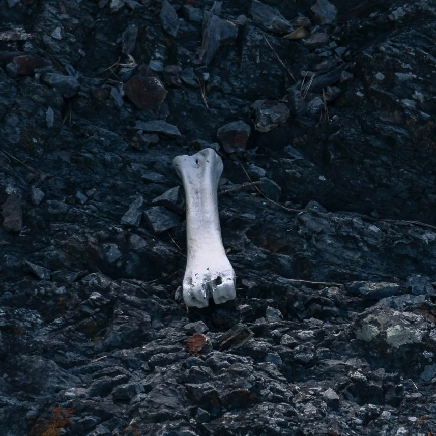
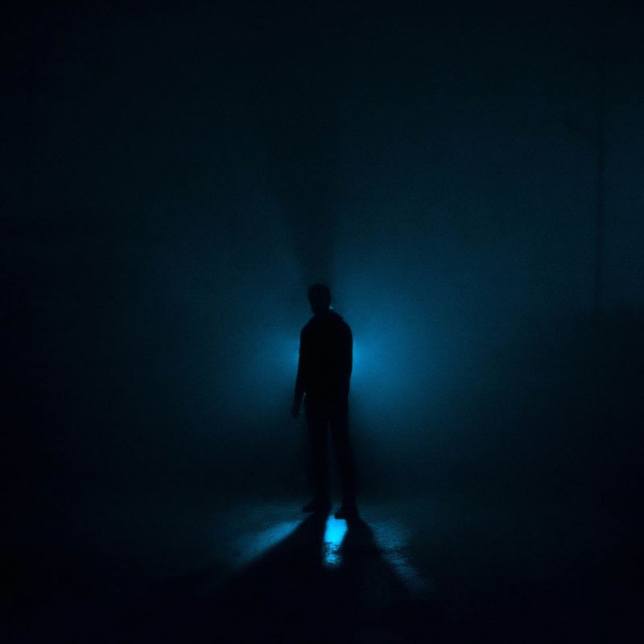
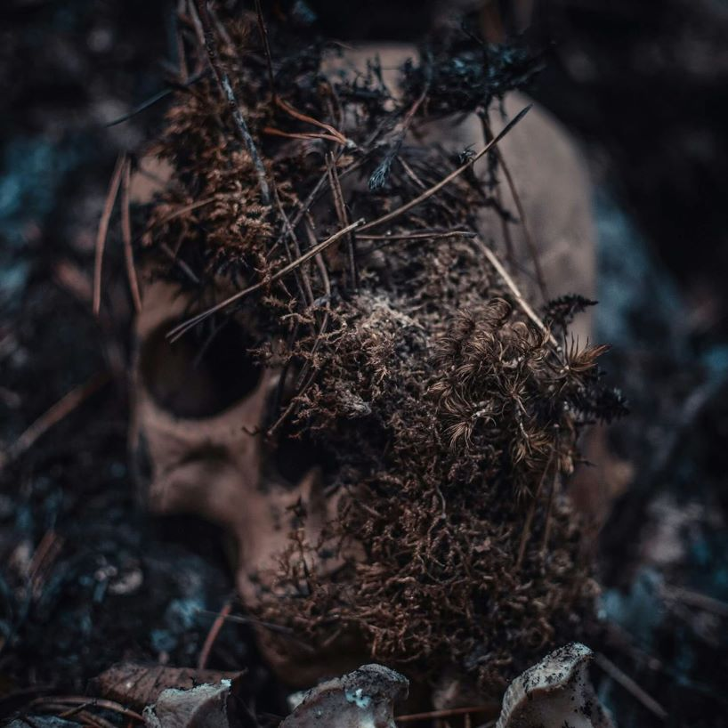
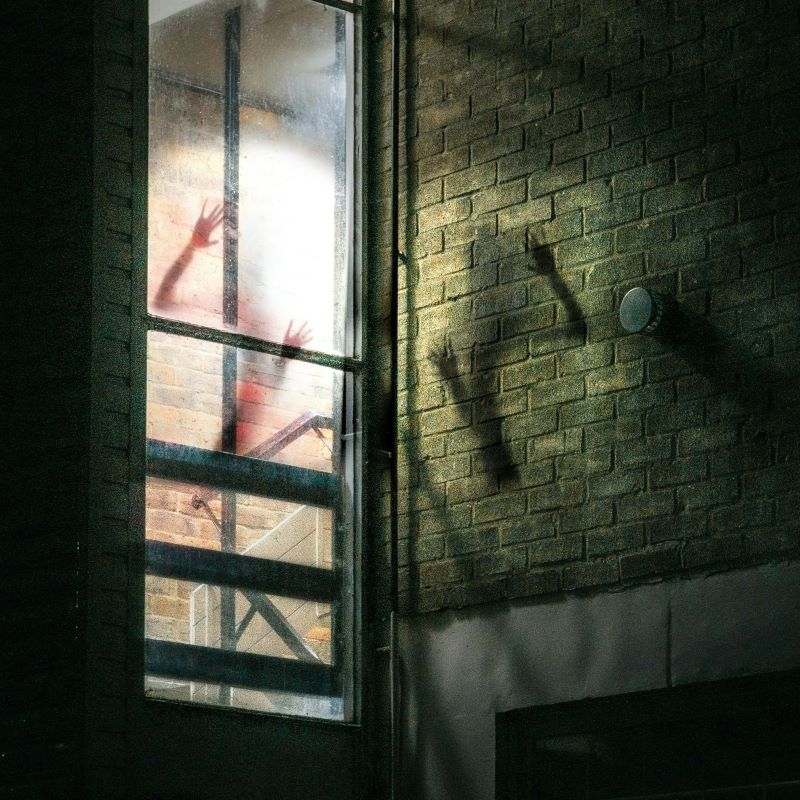
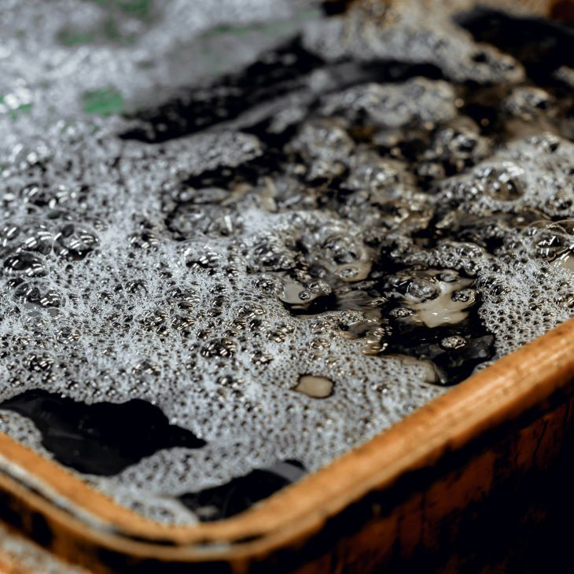
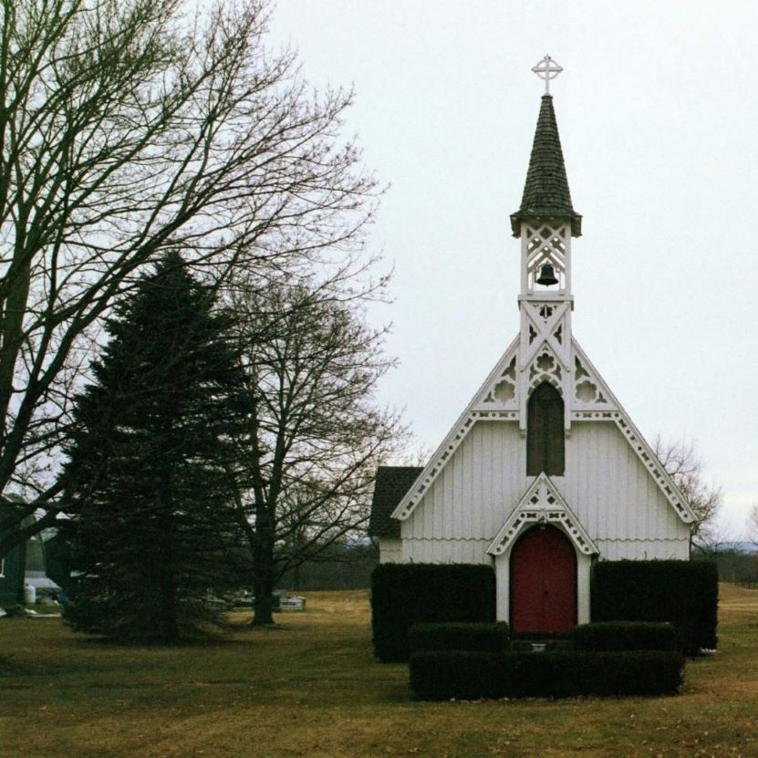

Ghost Guide: Spirit Credit: Alex Mihu The Spirit may be one of the most common of the known ghosts, but that doesn’t mean it’s harmless... Read More
Ghost Guide: Wraith  Credit: Mario Ame Because of its unique movement abilities, the Wraith feels more elusive than other ghost types, making it a tricky foe for investigators. Read More
Ghost Guide: Revenant Credit: Filip Steficar A aggressive ghost, the Revenant tends to stalk their victims. A hallmark of their presence is a slow, stead pattern of footsteps. Read More
Ghost Guide: Poltergeist  Credit: Zanyar Ibrahim Explosions of objects, scattered and strewn items, and high activity levels are all indications of a Poltergeist haunting. Read More
Ghost Guide: Hantu Credit: Ben Dodd Sudden and severe drops in temperature, unexplained frost formation, and puffs of frozen breath are trademark signs of a Hantu. Read More
Ghost Guide: Jinn  Credit: Julia Kadel While incredibly powerful, this ghost relies on the avalibility of a nearby powersource. This dependency is to the ghost-hunter's favour. Read More
Ghost Guide: Demon Credit: Andy Li Demons are by far the most aggressive, and most dangerous of ghost types you will ever face. Extreme caution is advised. Read More
Ghost Guide: Yokai Credit: Andy Li If you have noticed an increase in ghost activity coinciding with a rise in noise levels, a Yokai is a top suspect. Read More
Ghost Guide: Goryo Credit: Stefan Steinbauer These ghosts are extremely attached to their places of death, making their identification straightforward. Read More
Ghost Guide: Deogen  Credit: Thomas Willmott This archtype was originally discovered in the Netherlands, as the name suggests. Strong feelings of being watched... Read More
Ghost Guide: Banshee  Credit: Liu Jiawei Known for their tell-tale screams, Banshees are also identifiable by their dark water, clogging pipes and sinks. Read More
Ghost Guide: Thaye  Credit: Kyle McEvoy The Thaye seems to have forgotten that it has died, as it continues to exhibit signs of aging even in the afterlife. Read More